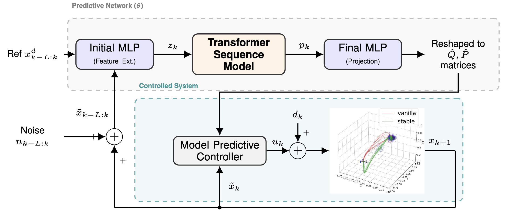

Drone Obstacle Avoidance Under Noise & Disturbances
Select observation noise and external disturbance levels to compare the Unstable (Baseline) and Stable (STAC-MPC) trajectories side by side.
Single-Agent Drone Obstacle Avoidance
STAC-MPC contracts error while unregularized baseline oscillates.Contraction & Robustness Insights
Adjusting the disturbance and observation noise levels demonstrates the effectiveness of the $\delta\text{ISS}$ contraction regularizer. While the unconstrained Transformer baseline suffers from high-frequency chattering, trajectory drift, and severe oscillations near obstacles, STAC-MPC certifies exponential error decay to maintain safe clearance.
Overview
While traditional Actor-Critic MPC relies on simple MLPs to dynamically adjust cost matrices, they struggle to capture the temporal consistencies needed for environments with time-correlated disturbances. Sequence models like Transformers solve this temporal issue, but proving their closed-loop stability within a feedback control loop is notoriously difficult.
We bridge this gap by embedding a Transformer into a differentiable MPC pipeline to predict cost matrices from past trajectories. By treating the Transformer and physical plant as an interconnected dynamical system, we use Riemannian contraction theory to mathematically bound the network's sensitivity to input noise. Enforcing these boundaries during training yields a highly performant control policy with certifiable theoretical robustness against severe disturbances.
-
Contribution 1: We provide a rigorous mathematical proof demonstrating that Transformer architectures can be constrained to satisfy global incremental Input-to-State Stability ($\delta$ISS).
-
Contribution 2: Using Riemannian contraction theory, we map the Transformer's sensitivity to input noise directly to the physical system's dynamics, deriving a strict "small-gain" condition for the entire closed-loop system.
-
Contribution 3: We translate these theoretical stability bounds into a structural regularization loss enforced during the neural network's training phase.

Citation
If you find this work useful, please consider citing it:
@article{marino2026stable,
title={Stable Transformer-Actor-Critic Model Predictive Control: A Contraction Analysis Approach},
author={Marino, Antonio and Modugno, Valerio and Cognetti, Marco},
journal={arXiv preprint arXiv:2606.20197},
year={2026}
}